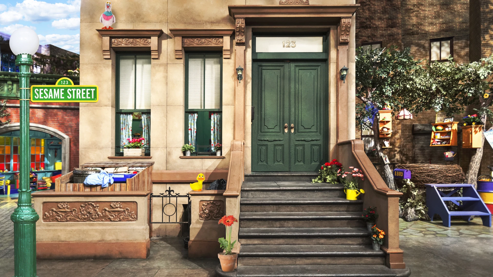

123 Sesame Street Appartementencomplex
Het 123 Sesame Street appartementencomplex is niet zomaar een gebouw; het is een levendige gemeenschap die de essentie van Sesamstraat belichaamt. Dit iconische gebouw, met zijn kleurrijke gevel en gezellige stadsappartementen, is de thuisbasis van enkele van de meest geliefde personages van Sesamstraat. Het is een plek waar vriendschappen worden gesmeed, avonturen worden beleefd en waardevolle levenslessen worden geleerd. De beroemde trappen van het complex hebben gediend als het podium voor talloze liedjes, verhalen en hartverwarmende momenten.